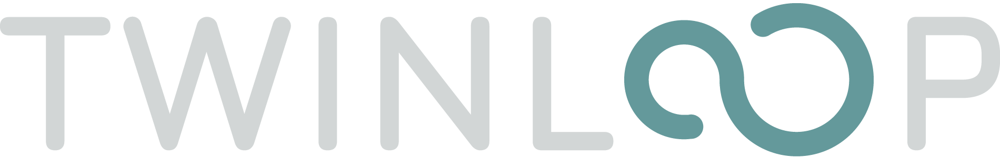

About Me
I am a Senior Research Scientist at RISE (Stockholm), specializing in building secure and cyber-resilient systems. With a Ph.D. in applied cryptography from KU Leuven/COSIC, my work focuses on integrating security- and privacy-by-design principles into complex, real-world applications.
My passion is tackling the security challenges of emerging technologies. I currently lead and contribute to key working groups (WGs) defining the future of next-generation wireless (NGWN/6G) and edge-to-cloud security. In my project work, I apply this expertise to critical sectors like EV ecosystems, manufacturing, and supply chains, designing secure architectures for data spaces and identity management.
I am a team-first leader with strong stakeholder engagement skills and an ISO/IEC 27001 Lead Auditor certification. I am an active contributor to Horizon Europe and Swedish funding proposals (co-securing ~SEK 10M), and my research on privacy engineering has been featured in international media, including Wired, NBC News, and The Atlantic.
Areas of Expertise
My skills bridge high-level strategy, technical architecture, and academic research.
-
Cybersecurity Leadership & Strategy:
- Leading WGs for NGWN/6G (BEiNG-WISE) & Edge-to-Cloud (NexusForum).
- Security-by-Design, Privacy-by-Design, Threat Modeling, & Zero Trust.
-
Technical & Domain Expertise:
- Systems: EV Ecosystems, Industrial Supply Chains, Manufacturing, Secure Data Spaces.
- Networks: Next-Generation Wireless (NGWN, 5G/6G), Edge/Cloud Security.
- Standards & Tools: ISO/IEC 27001, PKI/Identity.
-
Research & Funding:
- Horizon Europe & Swedish funding proposals (co-secured ~SEK 10M).
- Privacy Engineering, Applied Cryptography, & Decentralized Systems.
-
Professional & Academic Skills:
- Cross-domain stakeholder engagement.
- Teaching & Ph.D./MSc supervision in networked systems security.
Current Projects (Selection)
-
– Current
TWINLOOP - Secure Digital Twin Framework & TwinOps for Software-Defined EVs [Horizon Europe üá™üá∫]
Role: Secure Systems Architecture Lead & Contributor (RISE)
Vision (secure system architecture): Design and build the security architecture for an open, interoperable Digital Twin framework-Zero Trust by default-to enable secure status monitoring, predictive analytics, and data-driven innovation across multi-OEM ecosystems.
What I do: Define the reference security architecture (vehicle ↔ edge ↔ cloud), lead threat modeling, and specify controls so multiple Digital Twins can exchange information securely across OEM and Tier-1/2 ecosystems.
Programme: Horizon Europe üá™üá∫ (2ZERO Partnership)
Call: Advanced digital development tools for SDVs - HORIZON-CL5-2024-D5-01-05
Learn more: twin-loop.eu
Alignment: Open Framework for the MyEV Digital Twin (specs, reference architecture, data models & interfaces) and Open TwinOps (lifecycle, CI/CD, synchronization with physical EVs, secure operations).
-
– Current
NexusForum Research & Innovation Roadmap, Cognitive Computing Continuum [Horizon Europe üá™üá∫]

Consortium / WG: 120+ / 25+ participants
Role: Working Group Co‑Leader — Cybersecurity for the Cognitive Computing Continuum Roadmap
Role Description: Leading cross-sector collaboration to define security, resilience, and data-governance priorities for the Cloud–Edge–IoT Continuum, delivering guidance that informs EU policy, R&I agendas, and large-scale deployment strategies.
Funding agency: Horizon Europe (HORIZON)
Call: Coordination and Support of Cognitive Computing Continuum research and policy (CSA) - HORIZON-CL4-2023-DATA-01
Sweden Budget: - M SEK
Learn more: NexusForum.eu · NexusForum R&I Roadmap (first draft, Mar 2025)
Contributions (selection): Leadership; Technology & Innovation; Pilots; Roadmap — Security technologies, Zero‑Trust, Post‑Quantum Cryptography, Confidential Computing, Pervasive Encryption, Data Governance, Procurement Alignment, AI/ML Security, Threat Modeling; coordinating 25+ participants.
Expand “Details” to read selected contributions and technical priorities.
Details
- WG leadership & expertise coordination: Leading expert groups to analyze and prioritize essential security technologies, disruptive innovation areas, and fail‑safe mechanisms, ensuring alignment with EU cybersecurity, sovereignty, and resilience objectives.
- D1 — Technology & Innovation Layers: Investigating and defining core R&I priorities across foundational security capabilities (Zero‑Trust, secure data lifecycles), emerging innovations (Post‑Quantum Cryptography, confidential computing), and transitional safeguards (pervasive encryption, compliance‑anchored controls) to support secure-by-design Continuum architectures.
- D2 — Destinations / Mini‑Roadmaps: Developing strategic targets that map essential, emerging, and fail‑safe technologies into actionable mini‑roadmaps, connecting technical priorities with regulatory, deployment, and policy requirements to enable secure, interoperable, and sovereign EU infrastructures.
- R&I Roadmap contribution (first draft): Co‑authoring and reviewing the NexusForum R&I Roadmap (Mar 2025), translating WG outputs into prioritized research actions and strategic recommendations for the European Commission — view first draft.
-
– Current
CitCom.ai (AI TEF SCC) ‚Äî Digital Europe üá™üá∫ & Vinnova üá∏üá™
Role: Project Contributor — Task 3.3: Cybersecurity, Cyber Resilience & Procurement/Governance
Consortium: 32 partners across 11 EU member states • Sweden Budget: 18 M SEK
- Security for Data Spaces Connectors: Validating and hardening the TEF cybersecurity stack by assessing connector security for data-in-transfer and data-at-rest, and collaborating with 6+ engineering teams across edge/IoT deployments.
- MIM6 Security Requirements (with OASC): Defining secure interoperability mechanisms and developing MIM6-aligned cybersecurity requirements (ISO 27001, Common Criteria, NIS2) across 3+ TEF integration scenarios, while supporting 4+ teams in their implementation for edge/IoT Smart City pilots in collaboration with OASC.
- Data Governance & Smart City Procurements: Aligning the procurement pipeline with Data Governance actions and system/software security requirements to ensure procured solutions meet compliance, interoperability, and secure-by-design expectations.
- AI/ML Security & Threat Modeling: Assessing ML/AI infrastructure and algorithmic threats, contributing to ML/AI security strategies, robustness requirements for ML pipelines, and evaluating multiple threat scenarios to guide engineering teams.
Learn more: CitComTEF · RISE project page · Vinnova
-
– Current
Behavioral Next Generation in Wireless Networks for Cyber Security (BEiNG-WISE) [COST Action üá™üá∫]
Role: Working Group Leader - Cybersecurity in Emerging Wireless Communications
Description: Coordinating research in next-generation wireless cybersecurity (5G/6G), including workshops, training, dissemination, and cross-disciplinary collaboration.
Funding Agency: COST Action
COST Action webpage: BEiNG-WISE
Learn more: beingwise.eu
-
–
Datadelning i en digitaliserad k√∂ttkedja [FORMAS üá∏üá™]

Role: Project Contributor - Researcher
Role Description: Research on sustainable data sharing and digital transformation in industrial systems, with focus on cybersecurity, privacy, and data analytics to support data-driven decision-making in the digitalized meat supply chain.
Funding Agency: Formas - Swedish Research Council for Sustainable Development
Budget: 11.8 M SEK
Learn more: Project Page · YouTube Video
Degrees
- PhD, Privacy Enhancing Technologies & Applied Cryptography - KU Leuven, Belgium (Supervised by Prof. Bart Preneel)
- MSc, Digital Systems Security - University of Piraeus, Greece
- Diploma, Information & Communication Systems Engineering - University of the Aegean, Greece
Certifications & Training (selection)
- ISO/IEC 27001:2005 Lead Auditor - TÜV NORD, Athens, Greece
- Advanced Cybersecurity Course - ENCS, The Hague, Netherlands
- Secure Application Development - SecAppDev, Leuven, Belgium
- Modern pedagogical and teaching methods in primary education - Institute der KPH Graz, Austria
Invited Talks (selection)
- 2023–2025: WG Co-Leader “Cybersecurity in emerging wireless communications” - BEiNG-WISE
- 2021: “Engineering Privacy for Vehicle-to-Cloud Infrastructure” - Privacy Engineering Group
- 2019: “Privacy-enhancing Sharing Platforms” - University of Manchester
- 2018: “Privacy in Car Sharing Systems” - IPEN Workshop, EDPS
- 2018: “Privacy-Preserving Information Sharing” - Chinese Academy of Sciences
Media Attention
Research featured in major international outlets related to privacy, security, and the Cambridge Analytica scandal.
- Wired: The Facebook privacy settings that doesn’t do anything at all - March 2018
- NBC News: Researchers say it was easy to take people’s data from Facebook - March 2018
- France24: Cambridge Analytica : le scandale qui fait trembler l’empire Facebook - March 2018
- The Atlantic: What Took Facebook So Long? - March 2018
- Blog post (summary): Collateral Damage Research Summary - March 2018
Selected Publications
Towards Empowering Stakeholders Through Decentralized Trust and Secure Livestock Data Sharing (2025)
Emerging Cybersecurity Paradigms in Wireless Networks: Physical Layer Innovation, Trust, and AI-Enhanced Defenses (2025)
Drowsiness and Fatigue Recognition Systems for Connected Vehicles, 6G and the EU AI Act (2025)
IEEE EuCNC/6G Summit DOI:10.1109/EuCNC/6GSummit63408.2025.11037012
HERMES: Scalable, Secure, and Privacy-Enhancing Vehicle Access System (2021)
IEEE Internet of Things Journal · DOI:10.1109/JIOT.2021.3094930
Collateral damage of Facebook third-party applications: a comprehensive study (2018)
Academic and Other Services
Event organizer:
- 2024: Open Industry Day on 5G/6G: use-cases, cyber-resilience and sustainability
- 2019: CPDP Event: “Private messaging: why should you care?”
Program Committee Memberships:
- 2025: IEEE IoT, CPDP, IEEE OJ-COMS, Cryptography and Communications (Springer)
- 2024: PoPETS
- 2023: PoPETS
- 2022: PoPETS
- 2021: PoPETS, Computers & Security, IEEE IoT, Journal of Cybersecurity and Privacy
- 2020: PoPETS, Computers & Security, ACM Transactions on the Web
- 2019: PoPETS, Computers & Security, DPM@ESORICS, CPDP
- 2018: ICISSP
- 2017: ICISSP
- 2016: ICISSP
External Reviews:
- 2021: IEEE Security & Privacy
Teaching & Supervision
-
– Current
PhD Supervision
- PhD Supervisor - S. Mohammadi, Industrial PhD Student at RISE
-
PhD External reviewer / examiner
- 2024: Rauli Kaksonen, "Transparent and tool-driven security assessment for sustainable IoT cybersecurity", University of Oulu, Finland
- 2025: Liu Shuaishuai, "Interdependent Privacy: Modeling, Measurement, and Mitigation", Budapest University of Technology and Economics, Hungary
-
–
NSS@KTH - Teaching Assistant & MSc Thesis Supervision
- Teaching Assistant at NSS@KTH
- Networked Systems Security (NSS): Fundamentals of secure modern networked systems
- Building NSS (BNSS): Implementation of secure networked systems
- Advanced NSS (ANSS): Engineering of emerging secure networked infrastructures
- MSc Thesis Supervision:
- 2021–2022: A. Kotsias - “Layer 2 Smart Contracts for Secure Vehicular-Sharing Systems”
- 2020–2021: S. Rabat - “Encrypted Documents Retrieval from the Cloud with Searchable Encryption”
- 2021: J. Shan - “Secure Vehicular Sharing Systems Implementation”
- Teaching Assistant at NSS@KTH
-
–
COSIC@KU Leuven - MSc Thesis Supervision
- 2019–2020: D. De Troch - “dPACE: A Decentralized Privacy-Preserving, yet Accountable Car Sharing Environment”
- 2017–2018: A. Madhusudan - “Applying Smart Contracts to Secure Car Sharing Systems”
- 2017–2018: D. Reardon - “Prevalence of Device Fingerprinting in Browser Extensions”
- 2016–2017: S. Dhooghe - “Applying Multiparty Computation to Car Access Provision”
- 2015–2016: T. Bertels - “Design of a Pairing Protocol for the AR.Drone 2.0”
- 2015–2016: K. Domin - “Security Analysis of the Drone Communication Protocol: Fuzzing the MAVLink Protocol”
-
–
Educator & Instructor - Ministry of Education, Police Academy, Lifelong Learning
- Educator & Instructor - Ministry of Education, Police Academy, Lifelong Learning
- Web Programming: PHP, SQL, and web technologies
- Application Development: Algorithmic logic and programming, university entrance prep
- ICT Technologies: CS principles, mathematics, ICT-enhanced learning
- Microsoft Office Suite: Training & certification (Police Academy & private sector)
- Orfeas Choir: Greek repertoire, Bass voice, Board Member - Stockholm, Sweden [Website]
- Aerial Photography & Editing:
 @aion_canvas
@aion_canvas
- First Aid & Lifeguard: Certification
- Athlete: Former Water Polo & Volleyball
- Email: iraklis.symeonidis@ri.se
- Phone: +46 73-077 43 52
- Location: Isafjordsgatan 22, 16440 Kista, Stockholm, Sweden
- LinkedIn: Iraklis Symeonidis
- RISE Profile: RISE Webpage
Personal Interests
Contact
- Educator & Instructor - Ministry of Education, Police Academy, Lifelong Learning